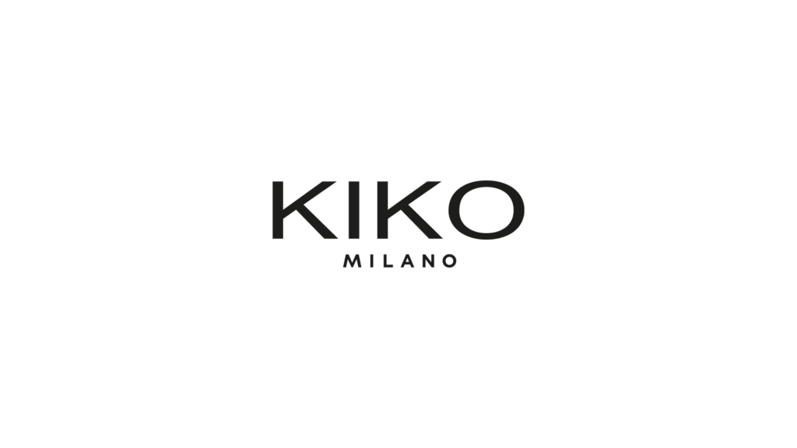

Beauty Advisor
KIKO Milano
Ho unito la mia passione per il beauty alle tecniche di vendita, lavorando per obiettivi e KPI e sviluppando una conoscenza concreta del comportamento e delle esigenze del target. Un’esperienza che mi ha permesso di comprendere quanto l’osservazione diretta del cliente sia fondamentale per costruire una comunicazione e un’offerta realmente efficaci.